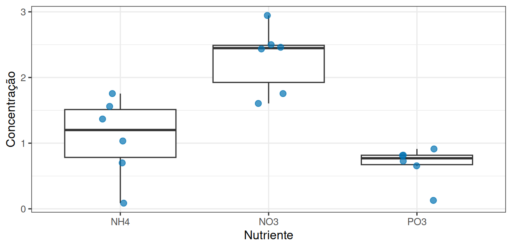

library(tidyverse)
theme_set(theme_bw(base_size = 12))Quando dois grupos se tornam três
Atividade extraclasse 03
1 De dois grupos para três
Um experimento em mesocosmos mediu a concentração de três nutrientes (NH4, NO3 e PO3) na água de tanques com e sem algas.
Esta atividade olha os três nutrientes ao mesmo tempo, dentro dos mesocosmos sem algas, e investiga o que acontece quando várias comparações de pares são feitas em vez de uma comparação só.
2 Vamos abrir os dados
url <- "https://raw.githubusercontent.com/FCopf/datasets/refs/heads/main/zuur-2009-data-sets/Biodiversity.txt"
biodiv <- read_tsv(url, show_col_types = FALSE)
glimpse(biodiv)Rows: 108
Columns: 7
$ MU <dbl> 1, 1, 1, 2, 2, 2, 3, 3, 3, 4, 4, 4, 5, 5, 5, 6, 6, 6, 7,…
$ Mesocosm <dbl> 1, 1, 1, 2, 2, 2, 3, 3, 3, 4, 4, 4, 5, 5, 5, 6, 6, 6, 7,…
$ Abundance <dbl> 0, 0, 0, 4, 4, 4, 8, 8, 8, 8, 8, 8, 12, 12, 12, 16, 16, …
$ Biomass <dbl> 0.0, 0.0, 0.0, 0.5, 0.5, 0.5, 1.0, 1.0, 1.0, 1.0, 1.0, 1…
$ Treatment <chr> "NoAlgae", "NoAlgae", "NoAlgae", "NoAlgae", "NoAlgae", "…
$ Nutrient <chr> "NO3", "NO3", "NO3", "NO3", "NO3", "NO3", "NO3", "NO3", …
$ Concentration <dbl> 2.490, 1.185, 3.825, 3.045, 2.190, 3.600, 2.835, 2.475, …O mesocosmo (MU) é a unidade experimental, e cada um foi medido três vezes, então resumimos as três medidas antes de analisar.
mesocosmos <- biodiv |>
group_by(MU, Treatment, Nutrient) |>
summarise(concentracao = mean(Concentration), .groups = "drop")
sem_algas <- mesocosmos |> filter(Treatment == "NoAlgae")
sem_algas |>
group_by(Nutrient) |>
summarise(n = n(), media = mean(concentracao), desvio = sd(concentracao))# A tibble: 3 × 4
Nutrient n media desvio
<chr> <int> <dbl> <dbl>
1 NH4 6 1.08 0.617
2 NO3 6 2.28 0.506
3 PO3 6 0.675 0.282ggplot(sem_algas, aes(x = Nutrient, y = concentracao)) +
geom_boxplot(outlier.shape = NA) +
geom_jitter(width = 0.12, size = 2.5, alpha = 0.7, colour = "#0072B2") +
labs(x = "Nutriente", y = "Concentração")
Olhando a Figura 1, com três grupos a saída óbvia seria fazer três testes t, comparando NH4 contra NO3, NH4 contra PO3 e NO3 contra PO3. Sua tarefa é investigar por que isso é problemático.